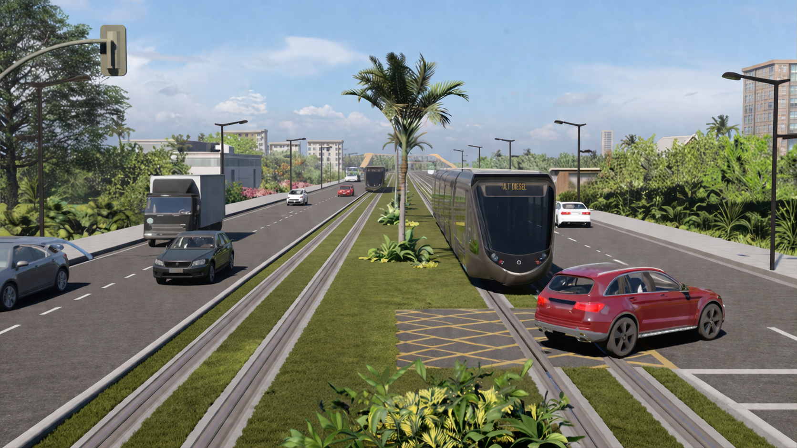

'">Relatório Estratégico · Consumo de Diesel e Cenários 2026
VLT · Gestão de Frotas
| Parâmetro | Resultado |
|---|---|
| Consumo Total Litros/h | 669,09 L |
| Consumo Total Litros Mês | 86.982,06 L |
| Custo Combustível Hora Frota | R$ 3.613,10 |
| Custo Combustível Mês Frota | R$ 469.703,15 |
Métrica crítica: Consumo médio mensal de 86.982 litros representa cerca de R$ 469 mil em custo direto de diesel.
| Frente de Serviço | Consumo (L/mês) |
|---|---|
| APOIO SERVIÇOS GERAIS | 5.889,15 |
| BANCO DE DUTOS | 5.279,73 |
| CIVIL | 16.467,86 |
| DRENAGEM | 3.926,00 |
| LABORATORIO | 390,00 |
| PAVIMENTAÇÃO | 18.019,73 |
| SUBESTAÇÃO | 288,89 |
| TERRAPLENAGEM | 25.292,10 |
| USINA | 6.277,52 |
| VIA PERMANENTE | 5.151,09 |
Análise estratificada: principais equipamentos responsáveis por 80% do consumo e demais itens
Metodologia: ordenação decrescente por consumo, acumulando até 80% do total de litros/mês. Demais equipamentos compõem o segundo gráfico para melhor visualização da cauda longa.
*Hedge: parcela do consumo com preço fixo de R$ 6,59 (orçado médio).
Observa-se que o preço do combustível diesel S10 apresentou variação acumulada de 37,08% entre janeiro e março de 2026, superando significativamente os índices inflacionários oficiais (IPCA: 2,8% no mesmo período). Considerando que o:
Ressalte-se que estão sendo adotadas iniciativas operacionais e tecnológicas com foco na otimização do desempenho da frota e na redução do consumo específico de combustível (L/h), dentre as quais destacam-se:
Tais ações visam mitigar, na medida do possível, os impactos decorrentes do aumento do preço do diesel.
Recomenda-se a adoção de avaliação prévia da continuidade das operações em períodos de chuva, considerando: